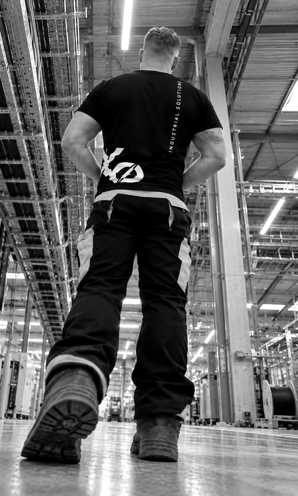

Electrical installations & cable routes
Electrical installation and cable routing work for industrial projects.
- Cable tray and ladder installation
- Power cable pulling and laying
- Cable connection and termination
- Switchboard and lighting installation
VCA • VOL-VCA • IPAF
We are a young, flexible team providing a broad range of assembly and technical services for industrial projects abroad. We adapt our work to the needs of each project.

From electrical installations to structural assembly. We adapt our services to the agreed scope and the needs of your project.
Electrical installation and cable routing work for industrial projects.
Assembly work on metal structures and their supporting components.
Flexible assembly and technical support for projects abroad.
We are a young company based in Slovakia, working on industrial projects abroad.
Ongoing assembly works on a data centre construction project in Belgium. The current scope covers cable routes, supporting structures and cable laying.
Cable route installation and cable laying at a paper mill in the United Kingdom. The scope included supporting systems, cable trays and ladders, together with associated assembly work.
Company ID: 57 302 880
Tax ID 2122656217 · VAT ID SK2122656217
Registered in the Commercial Register of the Municipal Court Košice, section Sro, file no. 64043/V
Interested in industrial projects abroad? Tell us about your experience, qualifications and availability. Opportunities depend on current project needs.
We welcome your CV even if your experience does not match the roles below. We assess each applicant individually and may provide training, depending on the role and current opportunities.
No CV needed. Fill in the form and send the email that opens, or message us straight on WhatsApp.